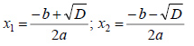

Квадратное уравнение — это уравнение вида ax^2 + bx + c = 0 ,
где а, b и c - действительные числа и а != 0.
Находим дискриминант D = b^2 - 4ac
Если D < 0 , то квадратное уравнение не имеет корней.
Если D = 0 , то квадратное уравнение имеет 1 корень: x = -b / 2a.
Если D > 0 , то квадратное уравнение имеет 2 корня:

#include <iostream>
#include <cmath>
using namespace std;
int main()
{
double a, b, c;
a = b = c = 0;
cin >> a >> b >> c;
if(a != 0 )
{
double disc = b*b - 4*a*c;
if(disc == 0)
cout << (-b) / (2*a);
else if(disc > 0)
{
cout << (-b + sqrt(disc)) / (2*a) << " " << (-b - sqrt(disc)) / (2*a);
}
}
else if(b != 0)
{
if(c != 0)
cout << (-c)/b;
else cout << 0;
}
// getchar();
return 0;
}